Толкование Арканов

Маг (I)
Суть: «Я могу всё» Маг — это символ активного созидания. На классических картах (и на той, что мы делали) у него на столе лежат все четыре масти: кубок, меч, пентакль и жезл. Это значит, что у него есть все ресурсы — чувства, мысли, деньги и энергия, — чтобы превратить желаемое в действительное. Он не ждет чуда, он создает его сам, используя свои таланты и знания.
Связь неба и земли: Главный жест Мага — одна рука поднята к небу, другая указывает на землю. Это воплощение принципа: «Что наверху, то и внизу». Он выступает как проводник божественной энергии в реальный мир. В раскладах это всегда знак того, что сейчас идеальный момент для новых начинаний. У тебя есть всё необходимое, чтобы проект «взлетел», главное — взять управление в свои руки.
Личность и интеллект: В психологическом плане Маг — это человек с острым умом, отличный коммуникатор и мастер своего дела. Он уверен в себе, харизматичен и способен убеждать других. Однако у него есть и «темная» сторона: Маг может быть манипулятором или трюкачом. Но в своей светлой ипостаси — это мастер, который осознанно строит свою жизнь, превращая идеи в материю.

Верховная Жрица (II)
Тайна и Интуиция: Жрица — это хранительница подсознания. Она не бежит решать проблемы логикой, она чувствует правильный путь. В раскладе она часто означает, что ответ на твой вопрос уже есть у тебя внутри, нужно просто замолчать и прислушаться к своей интуиции. Это карта «непроявленного» — того, что еще только готовится родиться в темноте.
Баланс противоположностей: На карте она почти всегда сидит между двумя колоннами: черной (Boaz) и белой (Jachin). Это символизирует дуальность мира: свет и тьму, добро и зло, мужское и женское. Жрица не выбирает одну сторону, она находится ровно посередине, объединяя их своей мудростью. Она понимает, что одно не существует без другого.
Тайное знание: В руках она часто держит свиток Торы или книгу, наполовину скрытую плащом. Это символ того, что истинное знание открывается не всем, а только тем, кто готов смотреть глубже поверхности. Жрица призывает не торопиться с выводами, а наблюдать, ждать подходящего момента и доверять своим снам и предчувствиям.

Императрица (III)
Изобилие и Созидание: Императрица — это карта процветания. Она символизирует успех в материальных делах, комфорт, красоту и чувственные удовольствия. Если она выпадает в раскладе, это добрый знак: «почва» готова, и то, что ты посадил (идею, проект или отношения), обязательно принесет богатые плоды. Это энергия «да», энергия роста и расширения.
Сила Природы: Она тесно связана со стихией Земли. На карте она часто изображена в окружении колосьев пшеницы, цветов и лесов. Императрица учит нас жить в гармонии с ритмами природы и собственного тела. Она напоминает, что для всего нужно время: как зерну нужно время, чтобы прорасти, так и любому делу нужна забота и терпение, а не суета.
Забота и Эмпатия: Это архетип Матери. Она олицетворяет гостеприимство, теплоту и умение окружить уютом. В отличие от жесткого контроля Императора (о котором мы поговорим позже), Императрица правит через любовь, мягкость и понимание. Она призывает проявлять доброту к себе и окружающим, наслаждаться моментом и ценить красоту жизни во всех её проявлениях.

Император (IV)
Порядок и Стабильность: Император — это фундамент. Он символизирует логику, дисциплину и контроль. В раскладе эта карта говорит о том, что пора перестать просто мечтать и начать строить четкий план. Он не терпит неопределенности: у него всё должно быть разложено по полочкам, а границы — четко обозначены.
Защита и Ответственность: Это карта лидера, который берет на себя ответственность за других. Император защищает свою территорию и своих людей. Он олицетворяет авторитет, опыт и житейскую мудрость. Его сила не в эмоциях, а в твердости духа и способности принимать сложные решения, основываясь на фактах, а не на чувствах.
Власть и Реализация: Император указывает на успех через самоконтроль. Он напоминает, что для достижения больших целей мало одного вдохновения — нужны правила и настойчивость. Это карта власти над своей жизнью, умения сказать «нет» лишнему и сосредоточиться на главном.

Шут
Тайна и Спонтанность: Шут — это чистая энергия начала. Он не обременен прошлым, логикой или страхом неудачи. В раскладе эта карта часто означает, что пришло время довериться интуиции и сделать шаг в неизвестность. Это момент «нулевой точки», когда старое уже закончилось, а новое еще не обрело форму.
Доверие Вселенной: На карте наш герой замер на самом краю астероида, глядя не вниз, в бездну, а вверх — на сияющие звезды. Это символизирует веру в то, что Вселенная поддержит тебя, даже если путь кажется опасным. Шут напоминает: чтобы обрести крылья, нужно сначала решиться на прыжок.
Тайное значение: В его руках — светящаяся белая роза, символ чистоты намерений и открытого сердца. Маленький узелок за плечами хранит лишь самое необходимое — опыт прошлых воплощений, который еще только предстоит распаковать. Шут призывает нас не бояться выглядеть глупо, быть искренними в своих желаниях и помнить, что каждый великий путь начинался с одного неосторожного шага.

Влюбленные
Выбор и Единство: Влюбленные символизируют не только романтические отношения, но и важный жизненный выбор, который делается сердцем, а не только холодным рассудком. Это момент обретения целостности через объединение двух противоположностей. В раскладе карта указывает на необходимость определить свои истинные ценности и следовать им, даже если этот выбор кажется сложным.
Космическое притяжение: На карте две фигуры замерли в пространстве под сиянием огромной звезды или туманности, которая выступает в роли божественного проводника. Это напоминает нам о том, что настоящая близость — это не только физическая связь, но и резонанс душ на уровне целой Вселенной. Между ними нет тайн, их союз освещен чистым светом высшего порядка.
Тайное значение: За спинами фигур часто изображаются Древо Жизни и Древо Познания, перенесенные в реалии темного космоса как источники вечной энергии и мудрости. Влюбленные призывают нас искать баланс между страстью и ответственностью. Это карта доверия — прежде всего самому себе и тому пути, который вы выбрали вместе с другим человеком или идеей.

Жрец
Традиции и Мудрость: Жрец олицетворяет собой духовную власть, следование правилам и передачу древних знаний. В отличие от Мага, который ищет личную силу, Жрец указывает на путь обучения внутри системы — будь то религия, университет или сложившиеся моральные устои. В раскладе эта карта часто означает появление наставника или необходимость прислушаться к проверенным временем советам.
Мост между мирами: На карте Жрец восседает на массивном троне между двумя порталами, ведущими в разные уголки Вселенной. Он выступает в роли переводчика божественных смыслов на человеческий язык. Его жест символизирует единство видимого и невидимого, напоминая нам о том, что даже в бесконечном хаосе космоса существуют свои незыблемые законы.
Тайное значение: У его ног часто изображаются ключи от тайн мироздания, перекрещенные на фоне звездной пыли. Они символизируют доступ к скрытым истинам, который открывается только тем, кто готов к дисциплине и глубокому изучению. Жрец призывает нас искать смысл в ритуалах и традициях, находя в них твердую почву для духовного роста.

Колесница
Контроль и Победа: Колесница символизирует решимость, силу воли и умение управлять противоположными силами для достижения цели. Это карта прорыва и движения вперед, когда человек берет бразды правления судьбой в свои руки. В раскладе она означает уверенный успех, преодоление препятствий и триумф, достигнутый благодаря дисциплине и концентрации.
Движение сквозь звезды: На карте возничий управляет мощной колесницей, которая мчится сквозь звездные врата или туманности. Вместо обычных сфинксов её тянут две энергии космоса — светлая и темная материи, стремящиеся в разные стороны. Мастерство Колесничего заключается в том, чтобы удерживать этот баланс, направляя колоссальную мощь Вселенной в единое русло.
Тайное значение: Броня Колесничего украшена лунными серпами и эзотерическими символами, защищающими его в пути. Над его головой сияет звездный венец, связывающий его волю с высшим замыслом. Колесница напоминает: истинная победа возможна лишь тогда, когда разум и дух работают в полном согласии, превращая хаос внешнего мира в упорядоченное движение к цели.

Сила
Внутренняя стойкость и Мягкость: Сила символизирует не физическую мощь, а отвагу, стойкость и способность обуздать свои внутренние инстинкты через любовь и терпение. В отличие от Колесницы, которая покоряет мир внешней волей, Сила действует через внутреннее равновесие. В раскладе эта карта означает победу над страхами, самообладание и способность сохранять спокойствие в эпицентре любой бури.
Укрощение звездного зверя: На карте изображена изящная, но уверенная фигура, которая без усилий усмиряет огромного космического льва, чья грива соткана из туманностей и звездной пыли. Это не борьба, а акт доверия и гармонии. Лев олицетворяет наши страсти и первобытную энергию, которая при правильном подходе становится не разрушительной, а созидательной силой, питающей дух.
Тайное значение: Над головой фигуры сияет золотой символ бесконечности, указывающий на то, что её возможности черпаются напрямую из божественного источника. Сила напоминает: истинное могущество заключается в умении принимать свои теневые стороны и превращать ярость в мудрость. Это карта мягкого доминирования, где дух берет верх над грубой материей без единого капли насилия.

Отшельник
Мудрость и Самопознание: Отшельник символизирует добровольное уединение ради поиска истины. Это время, когда внешний шум мира затихает, уступая место голосу интуиции. В раскладе эта карта говорит о необходимости сделать паузу, отойти от суеты и найти ответы внутри себя. Это не одиночество, а глубокое погружение в собственную суть для обретения истинной мудрости.
Свет среди пустоты: На карте изображен старец в простых темных одеждах, стоящий на вершине ледяного астероида или на краю застывшей туманности. В его поднятой руке сияет фонарь, внутри которого горит не огонь, а живая звезда — символ чистого сознания. Этот свет освещает лишь один следующий шаг, напоминая о том, что путь к истине открывается постепенно.
Тайное значение: В другой руке Отшельник держит посох, который служит ему опорой в странствиях по безграничному космосу. Посох — это символ накопленного опыта и дисциплины. Отшельник учит нас: самые важные сокровища скрыты в тишине, а самый яркий свет — тот, который мы зажигаем в своей душе сами. Это карта духовного наставничества и обретения целостности.

Фортуна
Цикличность и Перемены: Колесо Фортуны напоминает нам, что всё в мире находится в постоянном движении. Ни одна ситуация не вечна: за спадом всегда следует подъем, а за ночью — рассвет. В раскладе эта карта предвещает неожиданный поворот событий, удачу или смену жизненного этапа. Она призывает принять перемены, понимая, что мы — часть огромного вселенского механизма.
Вращение Галактик: В нашем стиле Колесо представлено как гигантская сияющая спираль галактики или древний астрономический механизм, парящий посреди пустоты. Вокруг него замерли четыре стража — Сфинкс, Орел, Лев и Телец, сотканные из созвездий. Они символизируют четыре стихии и четыре времени года, которые остаются неизменными, пока само Колесо вращается, определяя судьбы миров.
Тайное значение: В центре Колеса сияет точка абсолютного покоя — это символ нашего «Я», которое должно оставаться неподвижным, даже когда внешние обстоятельства стремительно меняются. Колесо Фортуны учит: удача улыбается тем, кто умеет подстраиваться под ритмы Вселенной и не боится отпускать старое ради того нового, что уже несется навстречу сквозь пространство и время.

Справедливость
Объективность и Истина: Справедливость символизирует честность, беспристрастность и логический анализ. Это момент, когда эмоции отступают, уступая место фактам. В раскладе карта говорит о необходимости принять ответственное решение, восстановить порядок или столкнуться с последствиями своих прошлых действий. Она напоминает: во Вселенной ничто не случайно, и каждое действие имеет равное противодействие.
Весы Мироздания: На карте фигура Справедливости восседает на троне из темного монолита. В одной руке она держит поднятый вверх меч из белого пламени — символ способности отсекать лишнее и видеть правду. В другой руке — весы, на чашах которых покоятся целые звездные системы. Она не закрывает глаза повязкой, как земная Фемида, потому что в космосе нужно видеть всё: и свет, и тьму, чтобы удерживать их в абсолютном балансе.
Тайное значение: Две колонны за её спиной — это стражи порядка, между которыми проходит тонкая нить судьбы. Справедливость учит нас, что истинная свобода возможна только в рамках закона и личной ответственности. Это карта ясности ума, юридических дел и кармического равновесия, где каждый получает именно то, что заслужил своим трудом и намерениями.

Повешанный
Жертва и Просветление: Повешенный символизирует добровольную остановку и отказ от активных действий ради обретения высшего знания. Это не наказание, а сознательный выбор: чтобы увидеть то, что скрыто от остальных, нужно перевернуть свой мир с ног на голову. В раскладе карта часто означает период ожидания, переоценку ценностей или необходимость посмотреть на ситуацию под совершенно иным углом.
Медитация в невесомости: На карте фигура замерла в состоянии глубокого транса, подвешенная к ветви Мирового Древа, которое прорастает сквозь саму ткань пространства. В условиях космоса понятие «верх» и «низ» исчезает, и Повешенный обретает истинную свободу в этой неподвижности. Вокруг его головы сияет яркий нимб из звездной пыли — знак того, что пока тело замерло, разум достиг небывалых высот.
Тайное значение: Лицо Повешенного спокойно; в нем нет страдания, только глубокое умиротворение. Это напоминание о том, что иногда самая большая сила заключается в умении отпустить контроль и довериться течению Вселенной. Карта учит нас: временная жертва комфортом или временем сегодня может привести к духовному прорыву, который навсегда изменит наше восприятие реальности.

Смерть
Завершение и Перерождение: Смерть — это не физический финал, а символ радикальных перемен и освобождения от того, что больше не служит твоему росту. Это момент, когда одна форма энергии распадается, чтобы стать основой для чего-то нового. В раскладе карта указывает на неизбежное завершение этапа, которое необходимо для глубокого внутреннего обновления.
Жатва среди звёзд: На карте изображён всадник в чёрных доспехах, чьё присутствие ощущается как холодная пустота между галактиками. Он несет знамя с белым цветком — символом чистоты и бессмертия духа, который переживёт любую катастрофу. Под копытами его призрачного коня гаснут старые звёзды, но из их пыли в тот же миг начинают рождаться новые миры.
Тайное значение: Смерть учит нас искусству отпускания без страха и сожалений. Только очистив пространство от теней прошлого, мы можем принять свет будущего. Это карта глубокой трансформации, которая напоминает: в бесконечной Вселенной нет окончательного конца, есть только вечный цикл превращений одной формы жизни в другую.

Умеренность
Гармония и Исцеление: Умеренность символизирует баланс, меру и спокойное созидание. Это карта исцеления души через объединение противоположностей. В раскладе она указывает на то, что сейчас не время для крайностей. Успех придет через терпение, самоконтроль и умение находить «золотую середину» даже в самых сложных обстоятельствах.
Потоки Энергии: На карте изображен ангел или высшее существо, замершее в открытом космосе. Он переливает сияющую субстанцию из одной золотой чаши в другую. Это не просто вода, а сама ткань мироздания — свет и тьма, которые смешиваются в идеальной пропорции. Одна его нога может опираться на край астероида, а другая — погружаться в туманность, что подчеркивает связь между материальным миром и духовным измерением.
Тайное значение: На груди ангела сияет символ равновесия, а взгляд устремлен вглубь себя. Умеренность учит нас искусству «душевной алхимии»: умению превращать хаос повседневности в чистое спокойствие. Это карта долгосрочного планирования и внутреннего мира, которая напоминает, что самые мощные трансформации происходят медленно и незаметно, подобно движению небесных тел.

Дьявол
Искушение и Привязанность: Дьявол олицетворяет наши внутренние тени, зависимости и материальные привязанности, которые ограничивают свободу духа. Это не внешнее зло, а ловушка разума, заставляющая нас верить, что выхода нет. В раскладе карта указывает на ситуацию, где страсть, страх или жажда контроля мешают видеть истинный путь, создавая иллюзию бессилия.
Трон в Пустоте: На карте изображена могущественная рогатая фигура, восседающая на черном монолите посреди мерцающих звезд. У его ног на тонких золотых цепях замерли две человеческие фигуры. Важная деталь: цепи наброшены свободно, что символизирует возможность освобождения в любой момент, как только узники осознают свою истинную природу. Над головой Дьявола сияет перевернутая пентаграмма, указывающая на преобладание материи над духом.
Тайное значение: Дьявол — это великий искуситель, который проверяет нашу верность своим идеалам. Он учит нас смотреть в лицо собственной тьме и признавать свои слабости, чтобы обрести над ними власть. Карта напоминает: истинные оковы существуют лишь в нашем сознании, и осознание этого — первый шаг к настоящему космическому освобождению.

Башня
Внезапное Разрушение и Прорыв: Башня символизирует резкие, часто болезненные перемены, которые разрушают старые структуры и ложные убеждения. Это момент, когда внешние обстоятельства принудительно освобождают нас от того, что строилось на неверном фундаменте. В раскладе карта означает очищающий кризис, который, несмотря на хаос, открывает путь к истине и новому строительству.
Удар Звездной Молнии: На карте изображена монументальная черная башня, парящая на одиноком астероиде, в которую ударяет ослепительный разряд чистой космической энергии. Корона, венчавшая вершину, слетает в бездну, а из окон вырываются языки магического пламени. Падающие фигуры символизируют свержение эго и крушение планов, которые не были согласованы с волей Вселенной.
Тайное Значение: Башня напоминает нам, что иногда единственный способ двигаться дальше — это позволить старому миру рухнуть до основания. Это карта духовного пробуждения через потрясение. Она учит, что истинная внутренняя крепость не нуждается в каменных стенах, и только пройдя через огонь трансформации, мы обретаем подлинную свободу от земных оков.

Звезда
Надежда и Обновление: Звезда — это карта духовного спокойствия, вдохновения и обретения истинного пути. После разрушительной энергии Башни она приносит исцеление и веру в будущее. В раскладе карта указывает на то, что ты находишься под защитой высших сил, и твои мечты начинают обретать реальную форму. Это время «тихого счастья», когда душа очищается от тревог и наполняется светом.
Источник Вечности: На карте изображена изящная дева, стоящая на краю звездного пруда или на самой поверхности туманности. В её руках два сосуда: из одного она льет живую воду на «землю» (кристаллическую поверхность астероида), а из другого — обратно в космический поток. Это символ бесконечного круговорота энергии. Над её головой сияет огромная восьмиконечная звезда, окруженная созвездиями, указывая на то, что её действия согласованы с ритмами Вселенной.
Тайное Значение: Звезда учит нас тому, что даже в самой глубокой тьме всегда есть ориентир. Она призывает быть искренним и открытым, не боясь проявлять свою истинную природу. Это карта талантов, творческого прорыва и глубокого доверия своей судьбе. Звезда напоминает: ты — частица этого звездного света, и твоя жизнь имеет высший смысл, который постепенно раскрывается перед тобой.

Луна
Иллюзии и Интуиция: Луна символизирует мир подсознания, снов и того, что скрыто за порогом рационального понимания. Это время неопределенности, когда логика бессильна и нужно доверять только внутреннему чутью. В раскладе карта может указывать на тайные страхи, иллюзии или ситуацию, где не все детали еще проявлены из темноты.
Тропа в Неизвестность: На карте изображена пустынная поверхность планетоида, по которой вьется узкая тропа между двумя высокими обелисками. Над ними царит огромная Луна, чье холодное сияние искажает привычные формы. Из глубокого кратера или звездного озера выползает странное существо — символ наших первобытных инстинктов, выходящих на свет. Волк и Собака по сторонам дороги олицетворяют дикую и прирученную стороны нашей души, замершие в ожидании рассвета.
Тайное Значение: Луна учит нас проходить сквозь свои страхи и не поддаваться обману теней. Это карта магического посвящения, когда старая личность должна «раствориться», чтобы возродиться в новом качестве. Она напоминает: даже в самый темный час внутри нас горит свет интуиции, способный вывести на верную дорогу сквозь лабиринт сомнений.

Солнце
Радость и Ясность: Солнце — это высшая точка успеха, символ абсолютной ясности и полноты жизни. В раскладе карта означает, что все тени прошлого рассеяны, а цели достигнуты. Это время триумфа, когда всё становится простым и понятным. Энергия Солнца дарит уверенность в себе, внутреннее тепло и способность видеть мир во всей его истинной красоте без искажений и страхов.
Рождение Сверхновой: На карте центральное место занимает ослепительное светило, чьи лучи пронзают тьму космоса. В центре этого света часто изображается ребенок на белом скакуне или пара фигур, танцующих на фоне подсолнухов, которые прорастают прямо из звездной пыли. Это символ чистого сознания, которое не обременено опытом прошлых ошибок. Белый конь — это обузданная жизненная сила, несущая героя к новым вершинам.
Тайное Значение: Солнце учит нас быть искренними и открытыми, как дети. Оно напоминает, что истинное величие заключается в простоте и умении радоваться каждому моменту бытия. Это карта реализации талантов, получения заслуженных наград и глубокого внутреннего согласия с самим собой. Под светом Солнца всё тайное становится явным, а невозможное — достижимым.

Суд
Трансформация и Призыв: Суд символизирует момент истины, подведение итогов и переход на совершенно новый уровень бытия. Это не приговор, а избавление от груза прошлого. В раскладе карта указывает на важное известие, разрешение давней проблемы или осознание своего истинного предназначения. Это зов, который невозможно игнорировать — время «проснуться» и сделать шаг к своей высшей версии.
Голос Вселенной: На карте в бескрайней пустоте космоса парит величественная фигура Архангела, чья труба испускает не звук, а мощную световую волну. Под воздействием этого резонанса из криокапсул или звездной пыли восстают фигуры людей. Они тянут руки к свету, символизируя готовность души к освобождению от материальных ограничений. Это триумф духа над временем и пространством.
Тайное Значение: Суд учит нас прощению — прежде всего самого себя. Это карта исцеления старых ран и окончательного выбора пути. Она напоминает: каждый наш поступок оставляет след в ткани мироздания, и наступает момент, когда всё накопленное превращается в мудрость. Суд призывает отбросить всё наносное и следовать за своим внутренним светом, который ведет к звездам.

Мир
Целостность и Триумф: Мир — это карта абсолютного успеха, завершения важного цикла и обретения гармонии. Все поиски закончены, все уроки выучены. В раскладе она означает достижение цели, признание заслуг и состояние полного удовлетворения жизнью. Это момент, когда ты чувствуешь себя на своем месте в этом огромном мире, а всё вокруг резонирует с твоим внутренним состоянием.
Танец среди Галактик: В центре карты в кольце из звездной пыли или лаврового венка, парящего в вакууме, замерла изящная фигура. Она танцует в состоянии невесомости, удерживая в руках два жезла — символы власти над микрокосмом и макрокосмом. По углам карты расположены четыре стража Вселенной (Ангел, Орел, Лев и Телец), которые теперь не просто наблюдают, а поддерживают баланс этого совершенного момента.
Тайное Значение: Мир учит нас тому, что конец — это всегда лишь начало нового, более высокого уровня. Это карта свободы от ограничений и выхода за пределы привычного. Она напоминает: Вселенная бесконечна, и ты — её полноправная часть. Когда достигается истинное мастерство, границы между «я» и «миром» исчезают, оставляя лишь чистую радость бытия в бесконечном пространстве времени.

Туз жезлов
Энергия и Начало: Туз Жезлов символизирует мощный импульс, энтузиазм и начало нового творческого пути. Это «зеленый свет» от Вселенной для реализации самых смелых идей. В раскладе карта означает прилив сил, внезапное озарение и готовность действовать. Это момент, когда потенциал превращается в кинетическую энергию прорыва.
Огненный Жезл Судьбы: На карте из темной туманности или облака звездной пыли появляется рука, сжимающая живой жезл. Он не просто деревянный — он светится изнутри, а из его почек вырываются искры пламени, похожие на хвосты комет. Этот жезл — факел, освещающий путь в неизведанное. Вокруг него кружатся листья-искры, символизируя жизненную силу, которая готова прорасти даже в пустоте вакуума.
Тайное Значение: Туз Жезлов учит нас доверять своей искре. Это карта мужской, активной энергии и непоколебимой веры в свой успех. Она напоминает: любая великая империя начиналась с одной дерзкой мысли. Если ты чувствуешь этот жар внутри — значит, время пришло. Хватай этот шанс и направляй свою волю к звездам.

Король жезлов
Лидерство и Харизма: Король Жезлов символизирует абсолютную уверенность, благородство и способность вдохновлять целые миры. В отличие от юного Пажа или импульсивного Рыцаря, Король не просто бежит вперед — он управляет энергией. В раскладе эта карта указывает на период, когда ты обладаешь достаточной силой и авторитетом, чтобы воплотить в жизнь любой масштабный проект. Это время решительных действий, основанных на опыте и видении будущего.
Трон на краю Солнца: На карте Король восседает на массивном троне из темного базальта, украшенном изображениями саламандр, кусающих свой хвост (символ вечного огня). Его мантия расшита искрами далеких галактик, а в руке он сжимает тяжелый жезл, навершие которого сияет как ядро сверхновой. Его взгляд устремлен вдаль, сквозь пространство и время, видя цели, недоступные остальным. Рядом с ним часто изображается маленькая ящерица — дух огня, покорный его воле.
Тайное Значение: Король Жезлов учит нас, что истинная власть — это ответственность за свой свет. Он напоминает: чтобы вести за собой других, нужно сначала полностью подчинить себе собственный внутренний огонь. Это карта предпринимателей, страстных натур и тех, кто готов созидать миры из пустоты, не боясь обжечься о собственное величие.

Королева жезлов
Харизма и Творческая Сила: Королева Жезлов воплощает в себе уверенность, независимость и магнетизм. В отличие от Короля, чья сила направлена вовне, Королева — это мастер внутреннего огня. Она знает свою цену и не боится быть в центре внимания. В раскладе карта указывает на период активного самовыражения, когда твоя энергия притягивает нужных людей и благоприятные обстоятельства. Это время, когда нужно действовать открыто и смело.
Трон среди Солнечного Ветра: На карте она восседает на троне, украшенном львами — символами солнечной мощи и храбрости. В её руке расцветающий жезл, а в другой — подсолнух, который в космосе превращается в сияющую звезду, дарующую жизнь. У её ног часто изображается черная кошка, символ тайных знаний и прирученной интуиции. Её взгляд полон тепла и в то же время непоколебимой решимости.
Тайное Значение: Королева Жезлов учит нас искусству самопринятия. Она напоминает, что истинная магия рождается из искренности и любви к своему делу. Это карта «черного золота» и готического шика: она элегантна, опасна и невероятно сильна. Она призывает: «Сияй, не прося разрешения, и Вселенная склонится перед твоим светом».

Рыцарь жезлов
Скорость и Страсть: Рыцарь Жезлов символизирует движение, решительность и неукротимую энергию. Это карта действия: здесь нет места долгим раздумьям, важен только рывок вперед. В раскладе она означает внезапный отъезд, стремительное развитие событий или прилив уверенности, который заставляет тебя буквально «лететь» к своей цели. Это азарт и жажда жизни в её самом ярком проявлении.
Огненный Всадник Бездны: На карте изображен всадник в чешуйчатых золотых доспехах, верхом на коне, чья грива соткана из плазмы. Они мчатся сквозь пояс астероидов, не замечая преград. Рыцарь сжимает пылающий жезл, как копье, направленное в самое сердце далекой туманности. Саламандры на его накидке кажутся живыми, извиваясь в ритме этого безумного галопа по звездам.
Тайное Значение: Рыцарь Жезлов учит нас смелости рисковать. Это карта «ва-банка», когда харизма и напор заменяют детальный план. Она напоминает: иногда, чтобы победить, нужно просто стать быстрее самой судьбы. Будь осторожна, чтобы не выгореть слишком быстро, но не смей гасить этот пожар в душе, пока цель не достигнута.

Паж жезлов
Вдохновение и Порыв: Паж Жезлов символизирует внезапную идею, энтузиазм и готовность к приключениям. Это энергия ученика, который горит желанием познать тайны Вселенной. В раскладе карта часто предвещает интересные новости, начало нового проекта или импульс к обучению. Это тот самый момент, когда «хочется всё и сразу», и мир кажется полным невероятных возможностей.
Юный Исследователь Туманностей: На карте изображен юноша в темных одеждах с золотым шитьем, стоящий на поверхности пустынной планеты. Он завороженно смотрит на свой жезл, который начинает пускать живые побеги света. За его спиной в небе пылают три солнца, а песок под ногами напоминает алмазную пыль. Его взгляд чист и полон решимости — он еще не знает преград и верит, что может дотянуться до самых далеких галактик.
Тайное Значение: Паж Жезлов учит нас сохранять детское любопытство. Это карта смелости быть «новичком» и не бояться ошибок. Она напоминает: даже самое великое путешествие начинается с простого любопытства. Не гаси в себе этот огонь — сегодня он может стать факелом, который выведет тебя на совершенно новый путь развития.

Двойка Жезлов
Суть: «Весь мир в твоих руках»
Эта карта символизирует этап планирования и первого серьезного выбора. У тебя уже есть первые успехи, но теперь нужно решить: остаться в безопасности на освоенной территории или отправиться покорять неизведанное. Это момент концентрации сил перед большим рывком, когда амбиции встречаются с реальностью.
Визуальный образ:
Фигура в мантии стоит на балконе высокой башни, парящей над облаками. В одной руке он держит хрустальную сферу, внутри которой медленно вращается целая галактика, а другой опирается на высокий посох. Его взгляд устремлен в бескрайний звездный океан — он просчитывает маршрут к самой далекой планете своего будущего.
Тайное Значение:
Двойка Жезлов учит, что истинная власть начинается с контроля над собственным намерением. Не бойся своих масштабных целей. Сейчас — лучшее время, чтобы превратить туманную мечту в четкий план действий. Весь мир действительно ждет твоего решения.
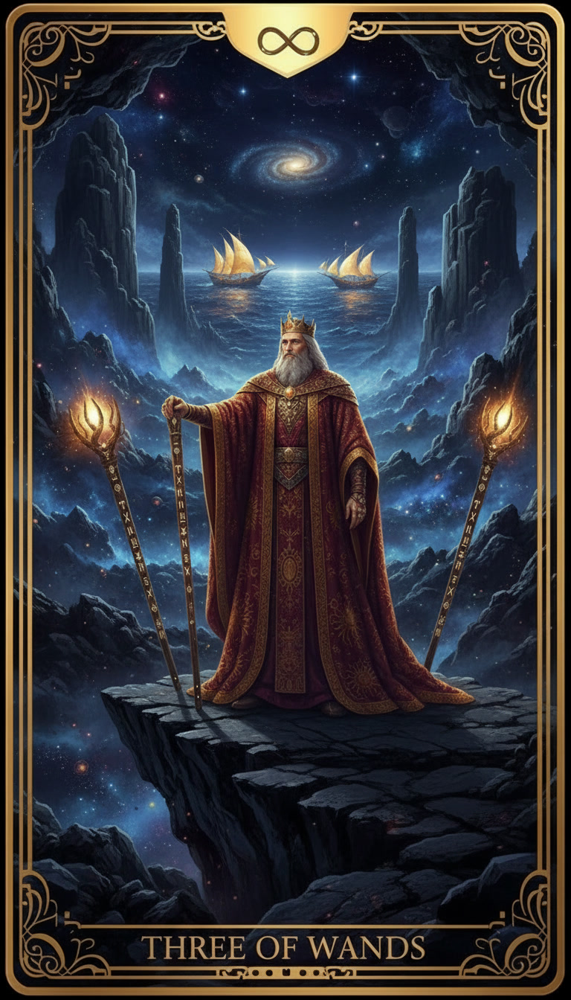
Тройка Жезлов
Суть: «Корабли уже в пути»
Если Двойка была про выбор плана, то Тройка — это уверенность в том, что процесс запущен. Ты проделал большую работу, и теперь плоды твоего труда начинают проявляться. Карта символизирует прочный фундамент, успех в делах и расширение влияния. Ты больше не просто мечтаешь, ты управляешь своей судьбой.
Визуальный образ:
На краю астероида, парящего в золотистой туманности, стоит путешественник, опираясь на один из трех высоких светящихся посохов. Он смотрит вдаль, где на горизонте событий появляются мерцающие точки — это его торговые фрегаты возвращаются из далеких систем. В этом пространстве нет страха, только спокойное ожидание заслуженного триумфа.
Тайное Значение:
Тройка Жезлов говорит: «Доверяй своим усилиям». Твои идеи жизнеспособны. Сейчас важно сохранять терпение и не останавливаться на достигнутом — твои возможности гораздо шире, чем кажется на первый взгляд. Смотри дальше, целься выше.
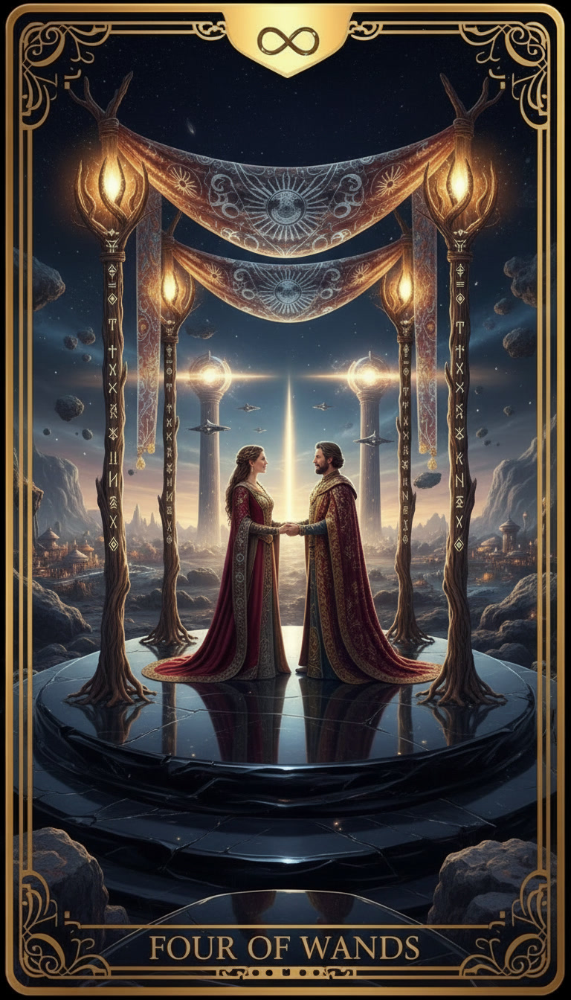
Четверка Жезлов
Суть: «Время праздновать»
Карта радости, гармонии и завершения важного этапа. Это стабильность, обретенная через труд, и возможность насладиться результатом в кругу близких людей. Она предвещает процветание, выход из кризиса или просто очень счастливое событие, которое стоит отметить. Твой фундамент прочен, и ты заслужил этот отдых.
Визуальный образ:
Четыре высоких хрустальных жезла вонзены в землю, образуя магическую арку, украшенную гирляндами из светящихся неоновых цветов. На заднем плане, за прозрачным куполом, виден уютный дом, окна которого сияют теплым янтарным светом. В воздухе разлито ощущение абсолютного покоя и безопасности, как будто сама Вселенная обнимает тебя после долгого пути.
Тайное Значение:
Четверка Жезлов напоминает: «Благодарность приумножает успех». Остановись на мгновение, чтобы похвалить себя за то, как много ты уже сделал. Это идеальное время для укрепления отношений и создания уюта. Ты дома, и здесь тебе рады.
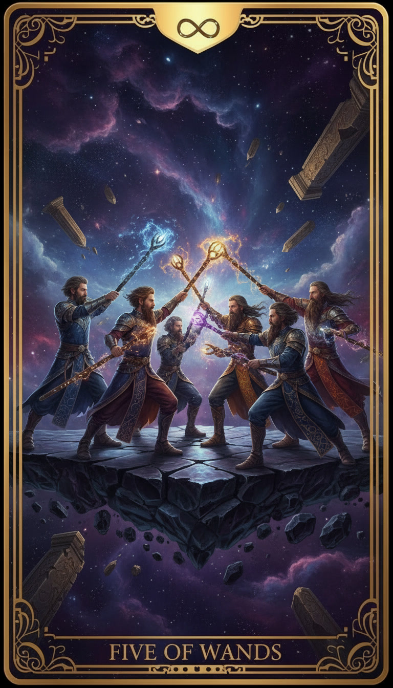
Пятерка Жезлов
Суть: «Испытание на прочность»
Карта символизирует амбиции, здоровую конкуренцию и суету. Это не открытая война, а скорее мозговой штурм или борьба за лидерство. Вокруг тебя много мнений и движений, каждый тянет одеяло на себя. Сейчас важно не злиться, а доказать делом, что твоя позиция — самая верная. Через это сопротивление рождается настоящий прогресс.
Визуальный образ:
На тренировочной площадке межгалактической академии пятеро юных адептов скрестили свои тренировочные посохи. Воздух искрит от разрядов магии, повсюду летают световые блики. Это не вражда — это яростный спор о том, как лучше управлять потоками энергии. В этой хаотичной пляске огней каждый проверяет свои границы и учится взаимодействию через борьбу.
Тайное Значение:
Пятерка Жезлов напоминает: «В споре рождается истина». Не бойся хаоса и критики — они заставляют тебя оттачивать свои навыки. Отстаивай свои взгляды, но слушай других. Сегодняшняя суета — это просто тренировка перед настоящим триумфом.
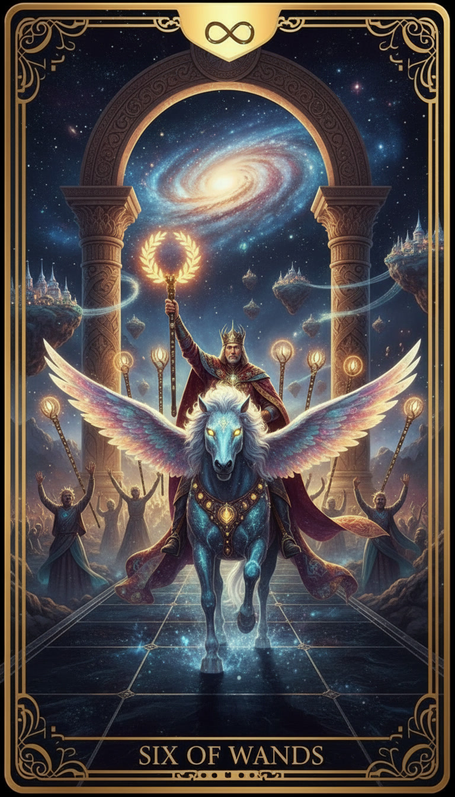
Шестерка Жезлов
Суть: «Триумф и признание»
Карта победителя. Все трудности Пятерки позади, и теперь ты пожинаешь плоды своей стойкости. Это момент, когда твои таланты замечают окружающие, приходят добрые вести и общественное признание. Ты на коне, и удача сейчас полностью на твоей стороне. Гордись собой — ты это заслужил.
Визуальный образ:
Всадник на белоснежном кибер-коне торжественно въезжает в сияющие врата небесного города. В его руке высокий жезл, увенчанный золотым лавровым венком из чистой энергии. Толпа теней и адептов приветствует его, а в небе в его честь расцветают магические салюты. Его путь был труден, но сейчас он — главный герой этой звездной системы.
Тайное Значение:
Шестерка Жезлов напоминает: «Верь в свою исключительность». Не стесняйся своего успеха и не прячь свои достижения. Твоя уверенность притягивает еще больше возможностей. Сегодня — день, когда нужно высоко держать голову и принимать заслуженные аплодисменты.
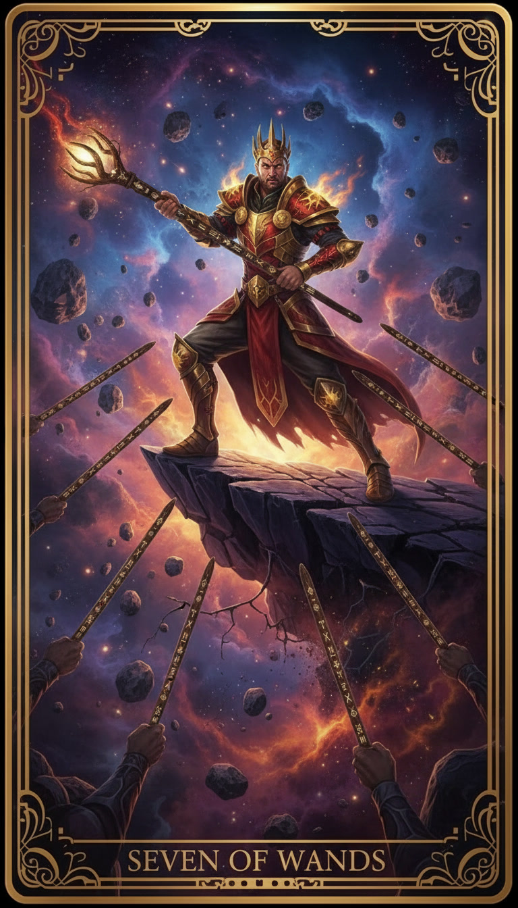
Семерка Жезлов
Суть: «Один против всех»
Карта мужества и решимости. Ты занял выгодную позицию, но теперь ее нужно защитить. На тебя могут давить обстоятельства, конкуренты или чужие мнения, но у тебя есть преимущество. Эта карта говорит, что ты сильнее, чем кажется, и если проявишь твердость, то удержишь свою победу. Не отступай ни на шаг.
Визуальный образ:
На вершине узкого ледяного пика, парящего в темном космосе, стоит защитник. В его руках один мощный светящийся жезл, а снизу, из бездны, к нему тянутся шесть других жезлов, пытаясь сбросить его вниз. Но он стоит твердо, его взгляд решителен, а броня отражает свет далеких звезд. Он выше суеты и готов отразить любой выпад.
Тайное Значение:
Семерка Жезлов напоминает: «Твои границы — это твоя крепость». Иногда конфликт необходим, чтобы подтвердить твой авторитет. Не бойся говорить «нет» и стоять на своем. Твоя внутренняя правда — это самый надежный щит.
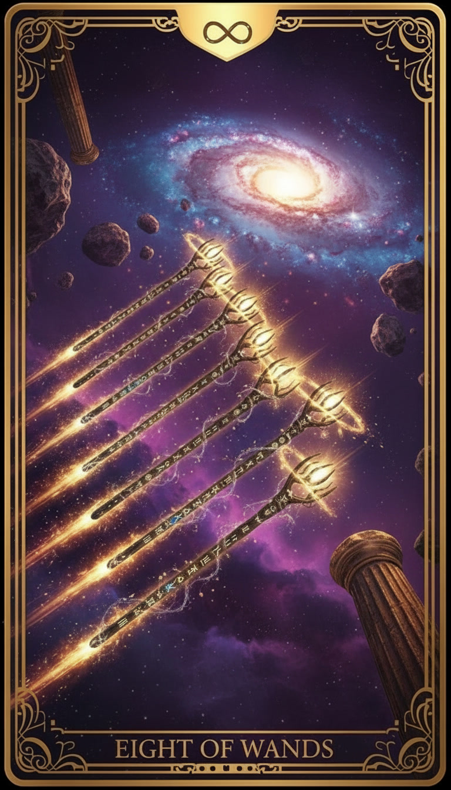
Восьмерка Жезлов
Суть: «Скорость света»
Карта стремительных перемен и добрых вестей. Застой закончился, события начинают развиваться с невероятной быстротой. Это время, когда нужно действовать решительно и не медлить, так как ситуация меняется прямо на глазах. Часто предвещает поездки, важные звонки или внезапное вдохновение, которое расставляет всё по местам.
Визуальный образ:
В глубоком вакууме космоса, на фоне мерцающих звезд, проносятся восемь огненных жезлов, оставляя за собой яркие неоновые шлейфы. Они летят стройным рядом, как стрелы, выпущенные невидимым лучником. В этом движении нет хаоса — только чистая направленная энергия, которая вот-вот достигнет своей цели, пронзая пространство и время.
Тайное Значение:
Восьмерка Жезлов напоминает: «Лови момент». Сейчас не время для долгих раздумий — доверься своей интуиции и лети навстречу переменам. Ответ, который ты ждал, уже в пути, и он будет быстрым. Будь готов принять поток новой информации.
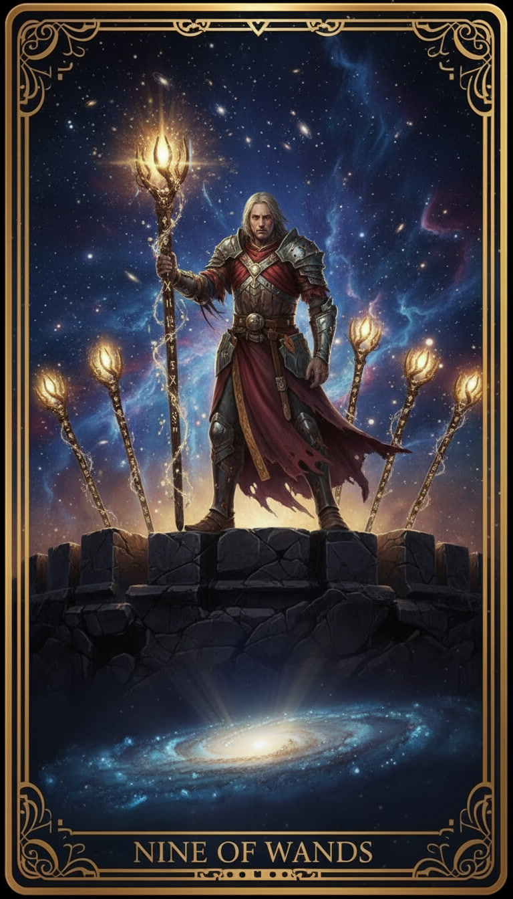
Девятка Жезлов
Суть: «Последний рубеж»
Карта невероятной внутренней силы и осторожности. Ты уже прошел долгий путь и, возможно, чувствуешь усталость, но цель совсем близко. Это состояние «на чеку»: ты извлек уроки из прошлого и теперь защищаешь свои достижения. Не сдавайся сейчас — у тебя достаточно ресурсов, чтобы выдержать финальное испытание и дойти до конца.
Визуальный образ:
На фоне разрушенного, но всё еще сияющего портала стоит воин в мерцающей броне. Его голова перевязана лентой из чистого света, а в руках он крепко сжимает девятый, самый яркий жезл. Позади него, как частокол, выстроены остальные восемь жезлов, создавая непроницаемый энергетический барьер. Он выглядит уставшим, но его взгляд непоколебим — он знает, ради чего стоит до конца.
Тайное Значение:
Девятка Жезлов напоминает: «Твои шрамы — это твоя мудрость». Не принимай осторожность за слабость. Сейчас важно собрать остатки сил и проявить железную волю. Ты почти у цели, и никто не сможет забрать то, что принадлежит тебе по праву.
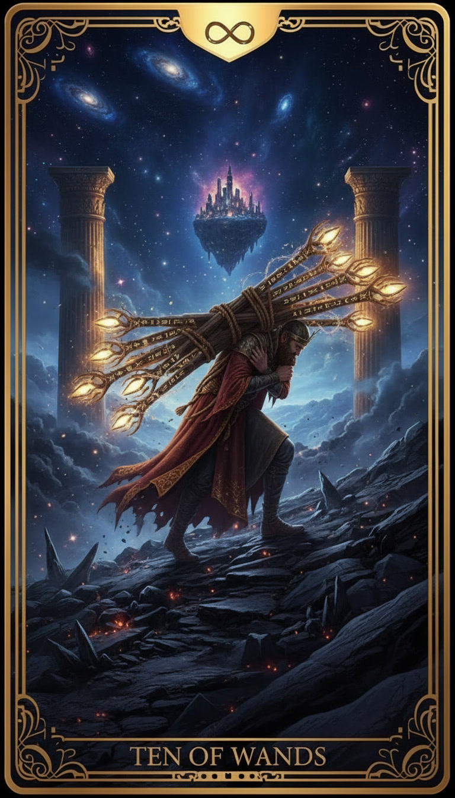
Десятка Жезлов
Суть: «Тяжелая ноша»
Карта гипер-ответственности и переутомления. Ты взял на себя слишком много, и сейчас этот груз давит на плечи. Ты почти у финишной черты, но за горой обязанностей перестал видеть саму цель. Это знак того, что пора делегировать задачи или сбросить лишнее, чтобы не выгореть в шаге от успеха. Труд будет вознагражден, но цена может быть слишком высока.
Визуальный образ:
Одинокий странник в тяжелом экзоскелете идет по поверхности планеты с повышенной гравитацией. Он несет огромную связку из десяти тяжелых, гудящих от энергии жезлов, которые закрывают ему обзор. Его спина согнута, каждый шаг дается с трудом, а впереди, сквозь пылевую бурю, едва брезжит свет далекого города. Он не бросает ношу, но его силы на исходе.
Тайное Значение:
Десятка Жезлов напоминает: «Не превращай дар в проклятие». Успех требует усилий, но он не должен лишать тебя радости жизни. Посмотри на свою ситуацию со стороны — возможно, ты тащишь чужие проблемы? Донеси то, что важно, и оставь остальное в прошлом.
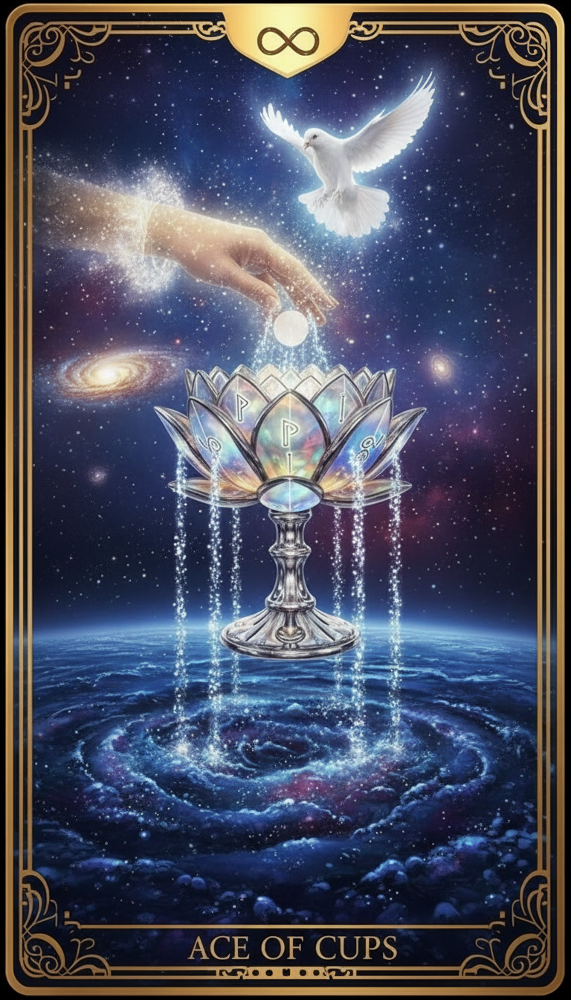
Туз Кубков
Суть: «Поток чувств и вдохновения»
Высший дар эмоций, интуиции и безусловной любви. Это начало чего-то глубокого: новой привязанности, творческого прорыва или духовного пробуждения. Карта говорит о том, что твоя внутренняя чаша переполнена светлой энергией, которую пора направить в мир. Это момент искренности, когда сердце открыто для чудес.
Визуальный образ:
Из сияющего портала в глубоком космосе спускается рука, окутанная серебристым туманом, и держит золотую чашу. Из чаши бьют пять бесконечных потоков чистейшей воды, которые, соприкасаясь с вакуумом, превращаются в каскады мелких звезд и планет. Внизу раскинулось бездонное озеро космической пыли, по которому расходятся мягкие круги света — символ того, как одна эмоция меняет всю Вселенную вокруг.
Тайное Значение:
Туз Кубков напоминает: «Слушай свое сердце». Сейчас нет смысла опираться только на холодную логику — доверься тому, что ты чувствуешь на самом глубоком уровне. Твоя доброта и уязвимость сегодня — твоя самая большая сила. Любовь уже здесь, просто позволь ей войти.
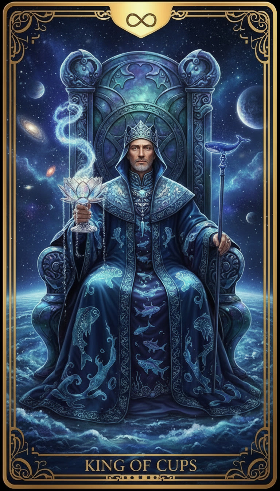
Король Кубков
Суть: «Владыка спокойных вод»
Эта карта символизирует эмоциональную зрелость, мудрость и самоконтроль. Король Кубков — это человек, который глубоко чувствует, но не позволяет эмоциям ослепить его разум. Он милосерден, спокоен и является отличным советником. В раскладе это знак того, что сейчас нужно сохранять душевное равновесие и действовать с позиции понимания и доброты, даже если вокруг бушует шторм.
Визуальный образ:
На троне, высеченном из цельного куска синего кристалла, восседает величественный мужчина. Трон дрейфует посреди безбрежного океана на далекой водной планете, а над его головой сияют два кольца Сатурна. В руке Короля — чаша, из которой исходит мягкое голубое свечение, успокаивающее волны. Несмотря на то, что он окружен стихией, его мантии сухи, а взгляд полон бездонного спокойствия — он властвует над глубинами, не погружаясь в них.
Тайное Значение:
Король Кубков напоминает: «Истинная сила — в сострадании». Не бойся быть мягким, но оставайся непоколебимым в своих принципах. Твоя способность сопереживать и понимать мотивы других — это твой главный козырь. Сейчас время для дипломатии и внутреннего мира.
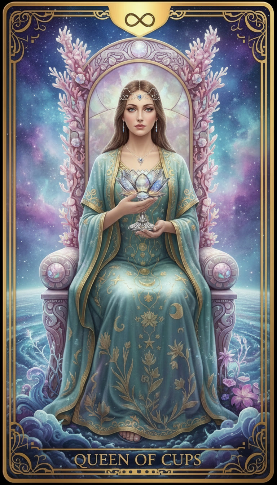
Королева Кубков
Суть: «Голос интуиции»
Эта карта символизирует глубокую связь с подсознанием, доброту и эмоциональную поддержку. Королева Кубков — это верный друг, любящая женщина или твое собственное «Я», которое сейчас очень тонко чувствует мир. Она не судит, она принимает. В раскладе это знак того, что сейчас нужно доверять предчувствиям и снам — твоя интуиция острее любого логического довода.
Визуальный образ:
На троне из перламутровых ракушек, парящем в коралловых туманностях далекой туманности Андромеды, сидит прекрасная дева. Её волосы перетекают в звездную воду, а платье соткано из лунного света. Она держит закрытую золотую чашу, украшенную сапфирами — символ того, что её чувства глубоки и сокровенны. Вокруг неё плавают призрачные рыбы-созвездия, принося ей шепот далеких миров.
Тайное Значение:
Королева Кубков напоминает: «Твои чувства — это твой дар, а не слабость». Не бойся своей эмоциональности и сострадания. Сейчас время для исцеления души и творчества. Позволь себе быть нежной и открытой, и мир ответит тебе тем же теплом.
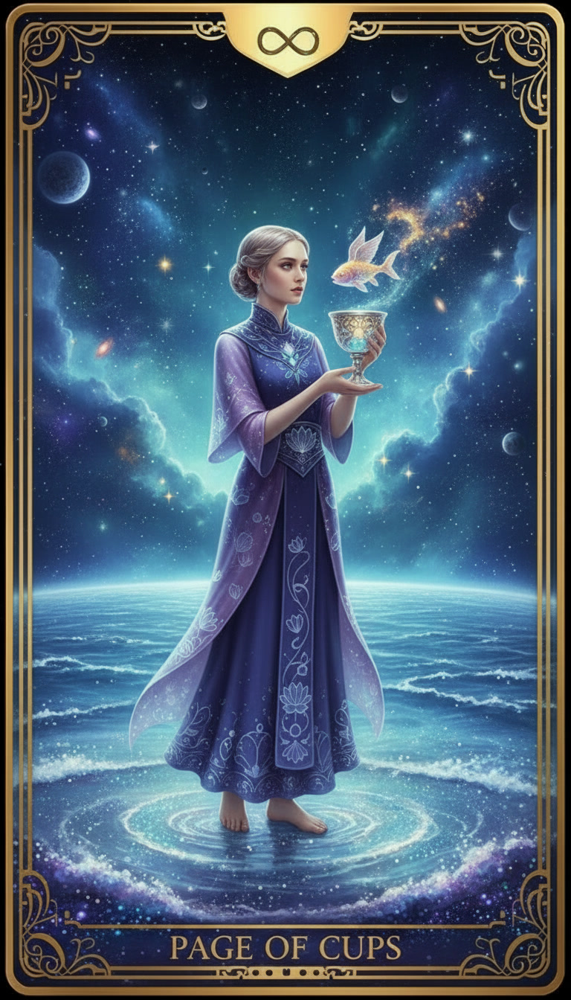
Паж Кубков
Суть: «Вестник чувств»
Карта нежности, воображения и приятных сюрпризов. Паж Кубков символизирует начало творческого пути или зарождение симпатии. Это состояние, когда ты открыт миру, как ребенок, и готов удивляться. В раскладе это часто означает доброе известие, приглашение на свидание или внезапный творческий порыв. Доверься своей чувствительности — она ведет тебя в правильном направлении.
Визуальный образ:
На берегу океана из жидкого серебра стоит юноша в легких одеждах цвета морской волны. В его руках — изящная чаша, из которой неожиданно выглядывает маленькая механическая рыбка, пускающая пузырьки из чистой плазмы. Паж не напуган, он с любопытством и доброй улыбкой смотрит на это маленькое чудо. За его спиной в небе плывут розовые облака из межзвездного газа, отражая его мягкий и мечтательный настрой.
Тайное Значение:
Паж Кубков напоминает: «Позволь себе мечтать». Не бойся выглядеть наивным или слишком эмоциональным. Сейчас время слушать свою интуицию и замечать знаки, которые посылает Вселенная. Твоя искренность — это ключ, который откроет двери, закрытые для холодного разума.
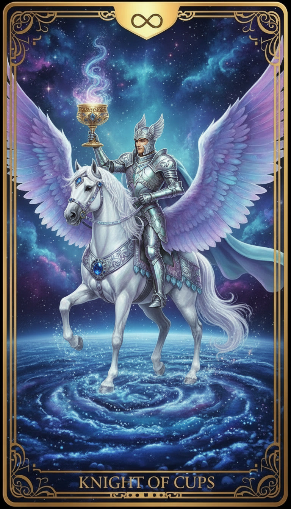
Рыцарь Кубков
Суть: «Мечтатель и посланник любви»
Карта движения, наполненного чувствами. Рыцарь Кубков не просто перемещается в пространстве, он следует за зовом сердца. Это символ влюбленности, творческого воодушевления и предложения, от которого трудно отказаться. В отличие от быстрых Жезлов, этот Рыцарь движется мягко, принося с собой атмосферу праздника, примирения или глубокого эстетического удовольствия.
Визуальный образ:
На грациозном механическом единороге, чья грива струится подобно северному сиянию, рыцарь в доспехах из зеркальной стали пересекает поле светящихся лилий на далекой луне. Он не сжимает оружие — в его протянутой руке покоится золотой кубок, над которым парит призрачная бабочка из чистого света. Его шлем украшен крыльями, символизирующими полет фантазии, а за его спиной медленно вращается лазурная планета, отражаясь в его сияющих латах.
Тайное Значение:
Рыцарь Кубков напоминает: «Доверяй своим порывам». Если тебе хочется признаться в чувствах или заняться искусством — сейчас идеальный момент. Не бойся быть идеалистом. Твоя искренность и умение видеть красоту в мелочах откроют тебе те двери, которые заперты для грубой силы.
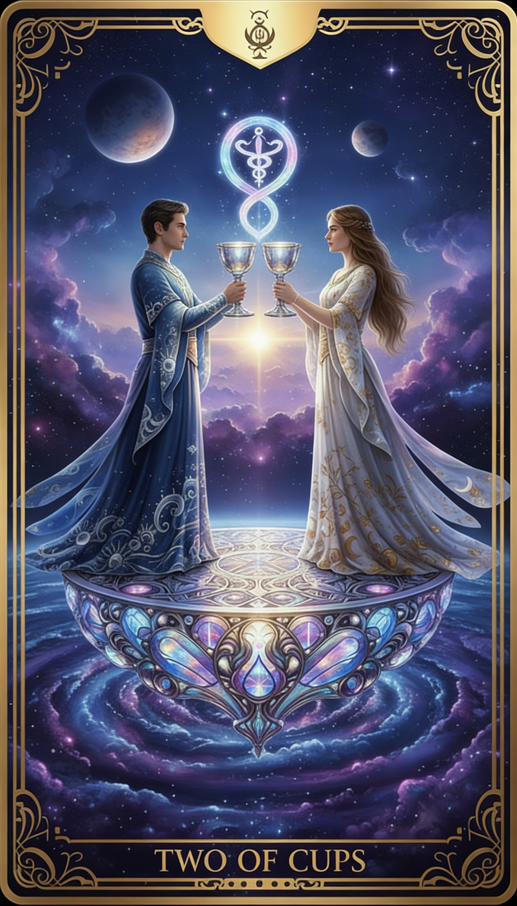
Двойка Кубков
Суть: «Единство и притяжение»
Карта взаимности, симпатии и духовной близости. Это идеальный союз двух людей, будь то начало большой любви, крепкая дружба или успешное партнерство. Двойка Кубков говорит о том, что противоречия исчезают, уступая место согласию и пониманию. В раскладе это знак примирения, удачного свидания или встречи человека, с которым вы «на одной волне».
Визуальный образ:
На фоне двойной звездной системы, где два солнца медленно вращаются друг вокруг друга, стоят мужчина и женщина в легких серебристых скафандрах. Они поднимают свои кубки, и из них вырываются потоки золотой и лазурной энергии, переплетаясь в воздухе в форме бесконечности. Между ними парит призрачный жезл Гермеса с крыльями, символизирующий магию общения, а под ногами расцветает сад из кристаллических цветов, питаемых их общим светом.
Тайное Значение:
Двойка Кубков напоминает: «Мы сильнее, когда мы вместе». Не бойся открываться и доверять — именно через объединение с другими ты растешь. Сегодня — идеальный день, чтобы загладить старые обиды или сделать шаг навстречу тому, кто тебе дорог. Твое сердце знает путь к гармонии.
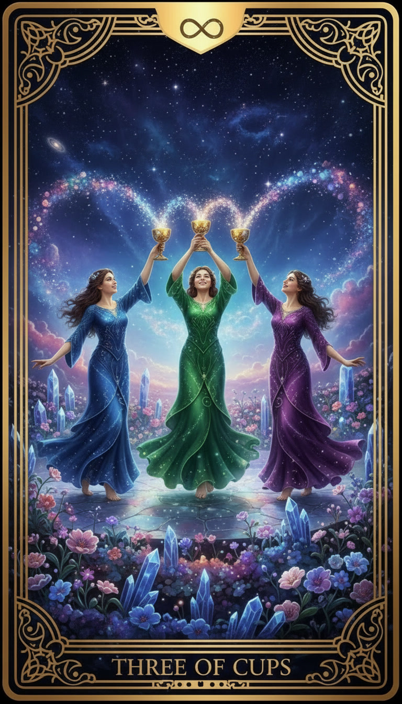
Тройка Кубков
Суть: «Танец созвездий»
Карта праздника, девичника или просто душевной встречи с друзьями. Это время, когда нужно отложить дела и насладиться моментом в компании тех, кто тебя понимает. Тройка Кубков говорит о том, что успех приятнее вдвойне, если есть с кем его разделить. Это энергия поддержки, смеха и искренней благодарности за то, что ты не один во Вселенной.
Визуальный образ:
Три грации в летящих одеждах, напоминающих полупрозрачные туманности, кружатся в танце на палубе парящего сада. Они высоко поднимают свои золотые кубки, из которых вылетают искры розового и фиолетового света, сливаясь в единый праздничный фейерверк. Вокруг них распускаются экзотические цветы, которые светятся в такт их движениям, а над головами сияет созвездие, формой напоминающее улыбку.
Тайное Значение:
Тройка Кубков напоминает: «Счастье приумножается делением». Не замыкайся в себе, даже если ты очень занят. Сегодня — лучший день для того, чтобы позвонить подруге, устроить ужин или просто обменяться добрыми словами. Твоя социальная сеть — это твой источник силы.
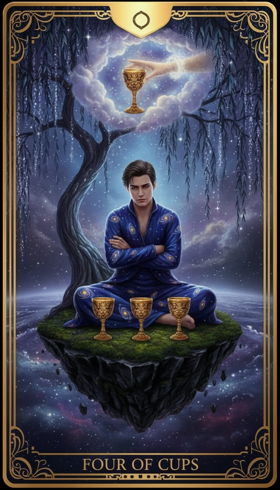
Четверка Кубков
Суть: «Внутренний штиль»
Карта апатии, скуки и поиска смысла. Когда всё кажется привычным и серым, даже новые возможности могут оставить тебя равнодушным. Это время временной изоляции, когда ты закрываешься от мира, чтобы разобраться в своих истинных желаниях. Не спеши соглашаться на первое встречное предложение — возможно, то, что тебе действительно нужно, еще скрыто от глаз.
Визуальный образ:
Под кроной серебристого дерева-фрактала на пустынной планете сидит юноша, скрестив руки на груди. Перед ним на песке стоят три пустых кубка, а четвертый — призрачный и сияющий — протягивает ему рука из облака звездной пыли. Но юноша не смотрит на дар; его взгляд устремлен вглубь себя. Вокруг царит тишина вакуума, и только мягкое свечение дерева напоминает о том, что жизнь продолжается, даже когда мы её не замечаем.
Тайное Значение:
Четверка Кубков напоминает: «Пауза — это тоже движение». Не ругай себя за отсутствие энтузиазма. Иногда нужно просто посидеть в тишине, чтобы услышать шепот собственной интуиции. Тот самый «четвертый кубок» никуда не денется — ты заметишь его, когда будешь готов.
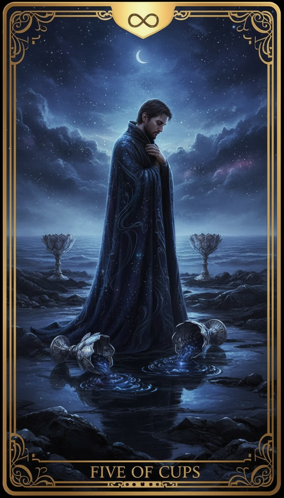
Пятерка Кубков
Суть: «Свет сквозь слезы»
Карта разочарования и скорби по прошлому. Ты смотришь на то, что разрушено, и не замечаешь того, что уцелело. Это период, когда нужно прожить свою грусть, не подавляя её. Но помни: даже если три кубка опрокинуты и их содержимое безвозвратно ушло в песок, два всё еще стоят полными. Жизнь продолжается, просто она стала другой.
Визуальный образ:
Фигура в черном плаще-невидимке стоит на обломках разрушенной космической станции. У её ног лежат три разбитых хрустальных кубка, из которых вытекает светящаяся неоновая жидкость, медленно испаряясь в вакууме. Фигура склонила голову, погруженная в свои мысли. Но позади неё, в тени обломков, стоят два целых кубка, до краев наполненных золотистым вином звезд. Далеко на горизонте виден мост из радужного газа, ведущий к новому созвездию — пути к спасению.
Тайное Значение:
Пятерка Кубков напоминает: «Не оборачивайся слишком долго». Да, потери болезненны, но они освобождают место для чего-то нового. Твои ресурсы не исчерпаны полностью. Оплачь то, что ушло, а затем обернись — тебя всё еще ждут те, кто остался верен, и возможности, которые ты пока не заметил.
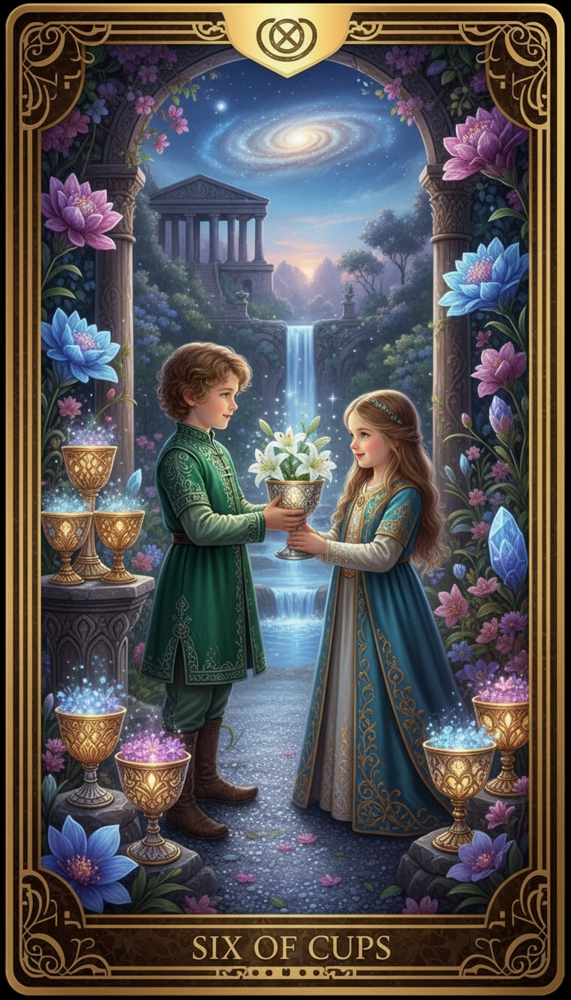
Шестерка Кубков
Суть: «Эхо родного дома»
Карта ностальгии, добрых воспоминаний и душевной чистоты. Она возвращает тебя в моменты, когда мир казался огромным и добрым, а радости были простыми. Это может быть встреча со старым другом, получение весточки из прошлого или просто состояние внутреннего уюта. Шестерка Кубков говорит о том, что пришло время проявить доброту — к себе или к окружающим.
Визуальный образ:
В тихом внутреннем дворике орбитальной станции, засаженном земными незабудками, двое детей в нарядных ретро-костюмах обмениваются кубками. В каждом кубке расцветает сияющая белая звезда, похожая на цветок. На заднем плане, за прозрачным куполом, медленно проплывает голубая Земля — колыбель, откуда всё началось. Атмосфера пропитана мягким сепийным светом, как старая кинопленка, вызывая чувство абсолютного покоя и нежности.
Тайное Значение:
Шестерка Кубков напоминает: «Твое прошлое — твой ресурс». Иногда, чтобы сделать шаг вперед, нужно вспомнить, о чем ты мечтал в самом начале. Не бойся быть сентиментальным. Поделись своим теплом с кем-то, кто в нем нуждается, и ты увидишь, как мир вокруг станет чуточку светлее.